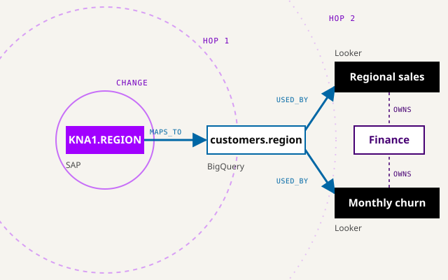

Use case · Safe change
See the blast radius first.
Renaming a column can break a report the agent never saw. Each step is checked against lineage, then Jev, TypeSafe's System 1 decision model, decides.
Illustrative, not a migration tool.Sample estate, in your browser. No real system is touched.

- Question
- Will this step break anything downstream?
- Graph
- Every dependent table, job and report.
- Playbook and hooks
- A skill sets the steps; hooks check the schema and block unsafe writes.
- System 1 gate
- Proceeds, asks, refuses or escalates, with a calibrated confidence.
Demo
Gate a migration step.
Pick an example or describe a change.